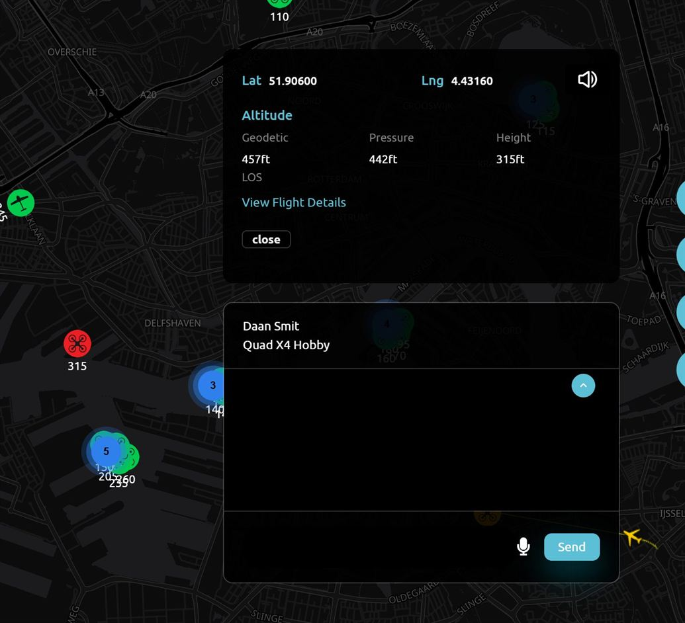

Case 14 · Authority portal
Live traffic alerts in the control room
Control-room staff watch every live drone and aircraft on one map. In the authority portal I added clustering for busy areas, a repeating alarm for unauthorised drones, pilot positions and fuller altitude details.
- JavaScript
- Google Maps API
- MarkerClusterer
The problem
With many drones in a small area the map became hard to read, and an unauthorised drone was easy to miss.
My part
- Clustering of live tracks, rebuilt at most once a second so the map stays responsive.
- A repeating alarm for each unauthorised drone, with a mute per drone, cleared when the drone leaves the feed.
- Pilot positions drawn next to their drones.
- Geodetic and pressure altitude in each track's information box.
- A line-of-sight request removed from every refresh of the information box, so each update sends fewer requests.
Result
Busy areas stay readable, and an unauthorised drone is heard as soon as it appears on the map.


// one alarm per unauthorised drone const alarms = new Map(); // flightId -> timer function syncAlarms(unauthorised) { for (const id of unauthorised) { if (alarms.has(id)) continue; const timer = setInterval( () => siren.play(), 3000); alarms.set(id, timer); } // drones that left the feed go quiet for (const [id, timer] of alarms) { if (unauthorised.has(id)) continue; clearInterval(timer); alarms.delete(id); } } // rebuild clusters at most once a second const refreshClusters = debounce( () => clusterer.repaint(), 1000);